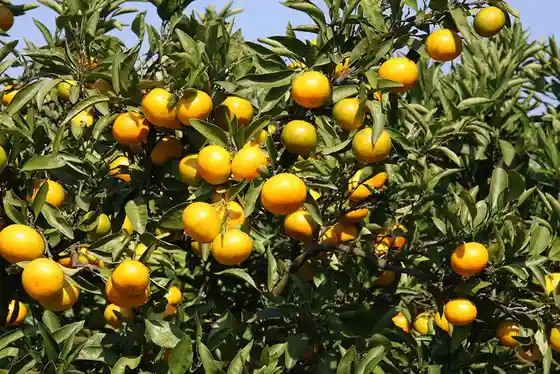
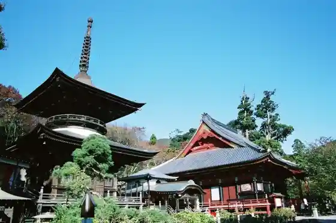
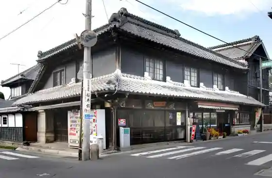
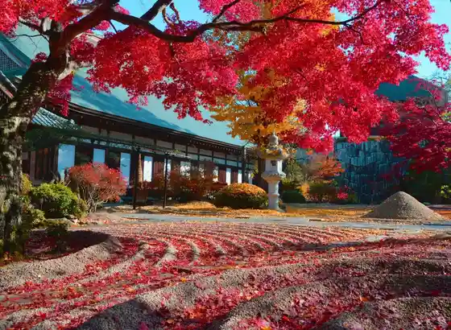

Sakayori Mikan Kari
Sakuragawa, Ibaraki · 0296-54-4435 · Official / source link

Shii Oyama Yakuo In
Sakuragawa, Ibaraki · 0296-55-1111 · Official / source link
Ame Hiki Kannon
Sakuragawa, Ibaraki · 0296-58-5009 · Official / source link

Makabe no Machinami Mi
Sakuragawa, Ibaraki · 0296-55-1111 · Official / source link

Yo Koyama Gassan Tera (Yokozangassanji)
Sakuragawa, Ibaraki · 0296-58-5111 · Official / source link

Umaiya
Sakuragawa, Ibaraki · 0296-76-0440 · Official / source link
Yamato Hosu Park
Sakuragawa, Ibaraki · 0120-666-875 · Official / source link
Isobe Sakuragawa Park
Sakuragawa, Ibaraki · 0296-55-1111 · Official / source link
Tomiya Kannon Oyama Tera
Sakuragawa, Ibaraki · 0296-75-4440 · Official / source link
Yakiniku Resutoran Kazuki
Sakuragawa, Ibaraki · 0296-55-3737 · Official / source link
Tennenkinembutsu (Sakuragawa no Sakura)
Sakuragawa, Ibaraki · 0296-76-1800 · Official / source link
Nishioka Main Shop
Sakuragawa, Ibaraki · 0296-55-1171 · Official / source link
Gosho Koma Taki Shrine
Sakuragawa, Ibaraki · 0296-55-1487 · Official / source link
Iwase Shiro Sogo Goraku Center
Sakuragawa, Ibaraki · 0296-76-1364 · Official / source link
Sembei Ya Sen Shichi
Sakuragawa, Ibaraki · 0296-55-5055 · Official / source link
Ueno Numa Yasuragi no Sato Campground
Sakuragawa, Ibaraki · 0296-76-0952 · Official / source link
Kun Seizan Yakuo Tera (Kunseizanyakuoji)
Sakuragawa, Ibaraki · 0296-54-4569 · Official / source link
Tsukuba Village no Soba Workshop (Kakinuma Seifun (Kabu))
Sakuragawa, Ibaraki · 0296-54-1151 · Official / source link
KEK Chokuei Iwase Nojo
Sakuragawa, Ibaraki · 0296-76-0744 · Official / source link
Takane no Yamazakura (Hirasawa Kominkan)
Sakuragawa, Ibaraki · 0296-55-1159 · Official / source link
Tsukubapurin Fuji Ya
Sakuragawa, Ibaraki · 0296-54-2401 · Official / source link
Shoku Don Tokoro Mikado
Sakuragawa, Ibaraki · 0296-55-0151 · Official / source link
Makabe Castle Ruins
Sakuragawa, Ibaraki · 0296-55-4111 · Official / source link
Wayo Kashi Workshop Isshin Do
Sakuragawa, Ibaraki · 0296-75-2120 · Official / source link
Ajia Shimodate Kantorii Kurabu
Sakuragawa, Ibaraki · 0296-75-3141 · Official / source link
Nagashima Buruberii Sono
Sakuragawa, Ibaraki · 0296-58-5646 · Official / source link
Men Workshop Hosaka
Sakuragawa, Ibaraki · 0296-76-3339 · Official / source link